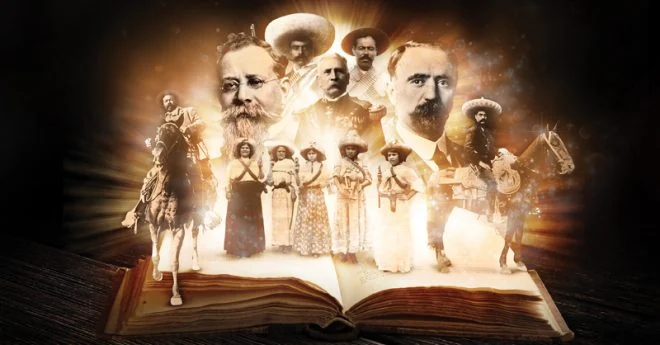

| BIBLIOGRAFIA |
|---|
|
BBC News Mundo, 18 de noviembre de 2018. "Revolución Mexicana: en qué consistió y
quiénes fueron los principales líderes", México, BBC News Mundo. Recolectado el 30
de septiembre de 2020. Haga clic en este enlace
para ir a www.bbc.com Proyectos Wikipedia, 25 de septiembre de 2020. "Revolución mexicana", México, Wikipedia. Recolectado el 30 de septiembre de 2020. Haga clic en este enlace para ir a www.wikipedia.com |  |
| Conlusiones (anterior) | REGRESAR AL INCIO |